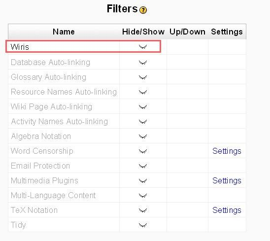
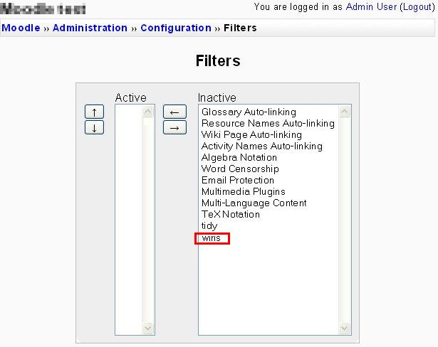

Uninstallation of WIRIS plugin 2.1 for Moodle
- Go to your moodle and modify filters and turn off WIRIS filter:
-
Moodle 1.7 and greater Administration > Modules > Filters:
Moodle 1.6 Administration > Configuration > Filters

-
Moodle 1.5 Administration > Configuration > Filters

- Restore your moodle/lib/weblib.php. In manually instalation
you have backuped it, maybe on moodle/lib/weblib.php.old
- Remove moodle/filter/wiris directory
- Remove moodle/pluginwiris/ directory